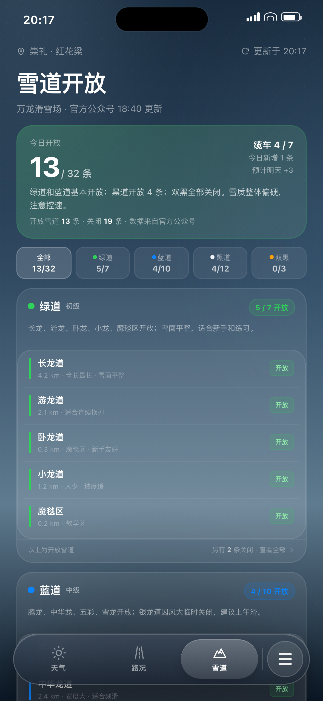
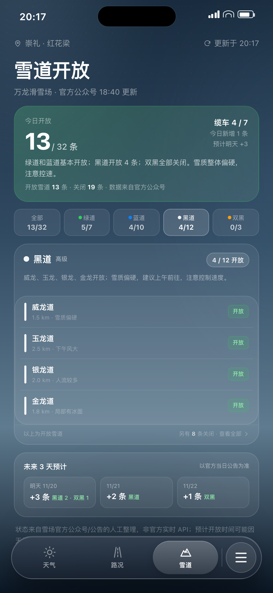

TRAIL STATUS · LIST VIEW
雪道开放 · 分类列表
不做矢量图 · 绿道 / 蓝道 / 黑道 / 双黑
按难度分类 + 文字描述开放雪道
更轻、更稳、版权风险更低
效果图为演示数据，不是真实开放情况

01 · 全部
首屏：总量 + 分类 + 绿道列表

02 · 筛选黑道
只看黑道开放情况
完整长图见 screens/02-list-full.png · 雪道状态需官方公众号/公告人工或半自动整理